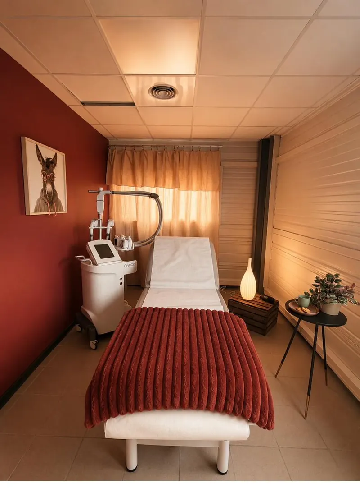
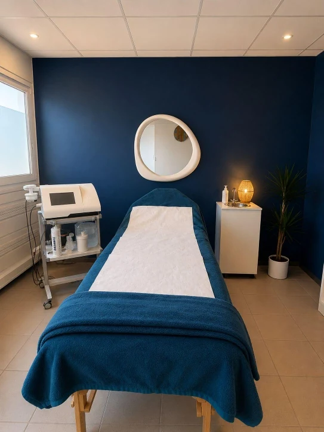
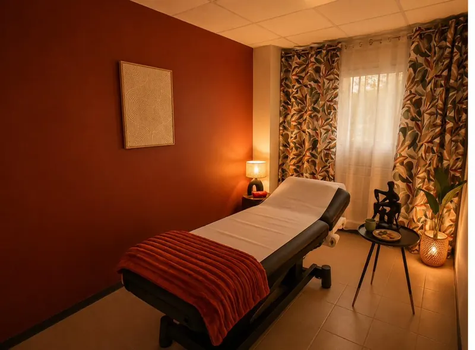

Vous faites des efforts mais votre corps ne répond plus comme avant ? Blocage métabolique, hormones, alimentation, stress... Chez Body Reset, nous identifions la vraie cause et agissons en profondeur — sans privation ni régime restrictif.
Si vous vous reconnaissez dans l'un de ces profils, notre approche est faite pour vous.
Régimes, sport intensif, restrictions... Rien ne fonctionne durablement. Vous reprenez les kilos perdus, et souvent plus. Le problème n'est pas vous : ce sont les méthodes.
Vous mangez peu mais ne perdez pas. Vous avez froid, fatigue, digestion lente. Votre métabolisme tourne au ralenti et a besoin d'être relancé en profondeur.
Ventre, hanches, cuisses, bras... Certaines zones résistent à tous vos efforts. Les amas adipeux localisés nécessitent une action ciblée que le sport seul ne peut atteindre.
La perte de poids durable n'est jamais qu'une question de calories. Hormones, sommeil, stress, microbiote, génétique — tout joue. C'est pourquoi notre protocole combine systématiquement nutrition clinique, technologies de remodelage et drainage profond.
Charlotte identifie d'abord vos vrais blocages métaboliques avec un bilan approfondi. Alison sélectionne ensuite les technologies les plus adaptées à votre morphologie et à vos zones cibles. Vous repartez avec un plan clair, des résultats mesurables, et surtout — la connaissance de votre corps.
Cliquez sur chaque technologie pour en savoir plus sur son fonctionnement et ses bénéfices.

Élimination par le froid des amas graisseux localisés. Non invasive, sans éviction sociale, jusqu'à 40% de réduction sur la zone traitée.
Voir cette technologie →
Remodelage haute précision du tissu adipeux pour sculpter et raffermir simultanément. L'allié idéal pour redessiner les contours.
Voir cette technologie →
Drainage lymphatique mécanique qui élimine toxines et rétention d'eau — booster naturel des effets minceur.
Voir cette technologie →4 kilos en 2 mois sans me priver. Charlotte a identifié mes vrais blocages métaboliques, et la combinaison cryolipolyse + adipologie a remodelé mon ventre comme jamais.
30 à 60 minutes avec nos expertes pour comprendre votre situation et définir le bon protocole pour vous.
Réserver mon bilan offert →